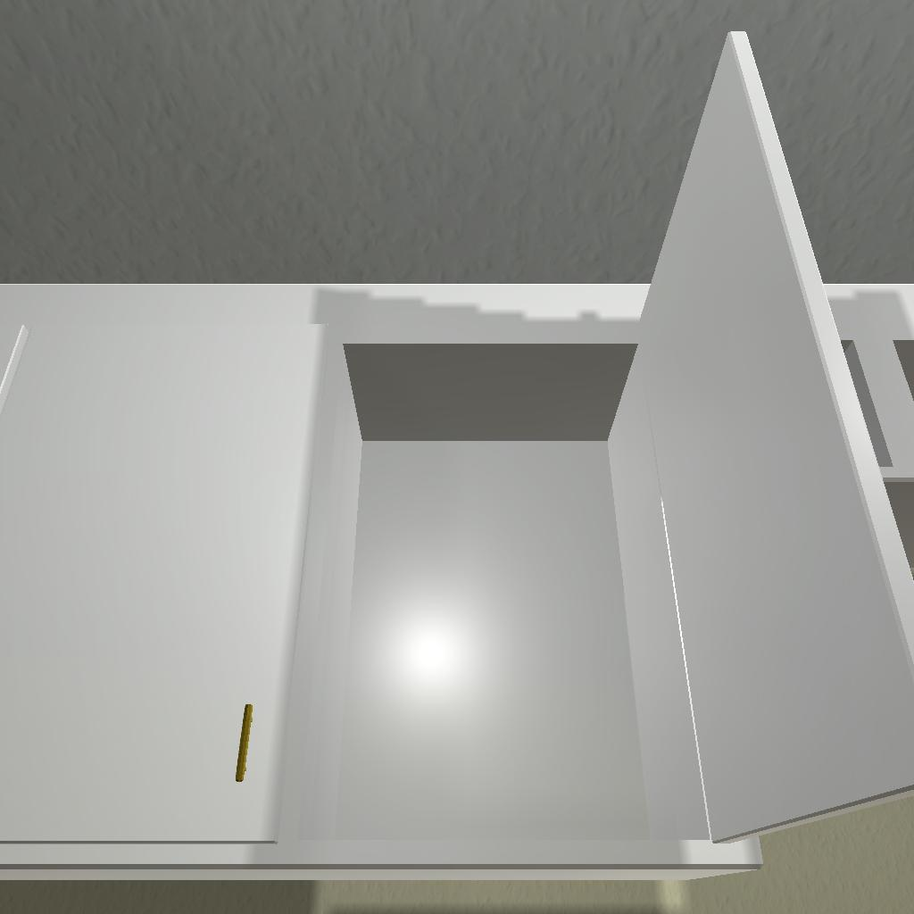

---------------------------------------------------------task: 18---------------------------------------------------------
--------------------------------------------------------------------------------------------------------------------------------------------------------------------
--------------------------------------------------------------------------------------------------------------------------------------------------------------------
Step:--------------------------------------------------------------------------17-------------------------------------------------------------------------------
----------------------------------------
VLM Prompt:
**Task**
Please perform as an embodied AI agent. Our final objective is to put a cool pot in cabinet. Below is the plan for completing the task, the current observation, alongside historical data and admissible actions for the next step. Please determine the best action for the next step!
**Plan**
Below is a detailed step-by-step plan to complete the task.
1. Find a pot.
2. Pick up the pot.
3. Find a fridge.
4. Cool the pot with the fridge.
5. Find a cabinet.
6. Place the cooled pot in the cabinet.
**Current Observation**
Displayed is an image capturing the current position of the agent.
Objects in The Image: ['cabinet', 'handle', 'wall', 'ceiling']
**History Information**
Displayed are the previous observations with their corresponding actions.
State 0:
No history.
State 1:
1. Step Index in the Plan: 1
2. Objects: Kitchen Sink, Cabinet, Drawer Handle
3. Action: go to cabinet 1
State 2:
1. Step Index in the Plan: Unknown (pot finding step)
2. Objects: Cabinet, Handles
3. Action: open cabinet 1
State 3:
1. Step Index in the Plan: Unknown
2. Objects: Cabinet, Cabinet Doors, Handles
3. Action: go to fridge 1
State 4:
1. Step Index in the Plan: 4
2. Objects: Refrigerator, Cabinet
3. Action: open fridge 1
State 5:
1. Step Index in the Plan: 4
2. Objects: Refrigerator, Countertop, Red Drawer Unit
3. Action: close fridge 1
State 6:
1. Step Index in the Plan: 5
2. Objects: Refrigerator, Cabinet, Countertop
3. Action: go to cabinet 1
State 7:
5. Step Index in the Plan: 5
6. Objects: Cabinet, Cabinet Door
7. Action: go to countertop 1
State 8:
1. Step Index in the Plan: 6
2. Objects: Countertop, Cabinet, Drawer Handles
3. Action: go to cabinet 2
State 9:
1. Step Index in the Plan: 6
2. Objects: Closed Cabinets (two)
3. Action: open cabinet 2
State 10:
1. Step Index in the Plan: 6
2. Objects: Cabinet (with doors closed)
3. Action: take nothing from cabinet 2
State 11:
1. Step Index in the Plan: 6
2. Objects: Cabinet with closed doors
3. Action: go to cabinet 3
State 12:
1. Step Index in the Plan: 6
2. Objects: Cabinet, Drawer handles
3. Action: open cabinet 3
State 13:
1. Step Index in the Plan: Likely 2 or 6
2. Objects: Cabinets (closed)
3. Action: close cabinet 3
State 14:
1. Step Index in the Plan: 6
2. Objects: Cabinet, Drawer Handles
3. Action: go to cabinet 4
State 15:
1. Step Index in the Plan: 6
2. Objects: Open Cabinet, Cooled Pot (not visible but implied from historical information)
3. Action: close cabinet 4
State 16:
1. Step Index in the Plan: 6
2. Objects: Open Cabinet
3. Action: open cabinet 4
State 17:
6. Step Index in the Plan: 6
7. Objects: Cabinet, Cabinet Door
8. Action: take nothing from cabinet 4
**Admissible Actions**
(1): go to cabinet 1
(2): go to cabinet 2
(3): go to cabinet 3
(4): go to cabinet 5
(5): go to cabinet 6
(6): go to countertop 1
(7): go to coffeemachine 1
(8): go to cabinet 7
(9): go to toaster 1
(10): go to cabinet 8
(11): go to sink 1
(12): go to fridge 1
(13): go to microwave 1
(14): go to garbagecan 1
(15): go to cabinet 9
(16): go to cabinet 10
(17): go to countertop 2
(18): go to cabinet 11
(19): go to cabinet 12
(20): go to drawer 1
(21): go to countertop 3
(22): go to drawer 2
(23): go to cabinet 13
(24): go to sinkbasin 1
(25): go to cabinet 14
(26): go to drawer 3
(27): go to stoveburner 1
(28): go to stoveburner 2
(29): go to stoveburner 3
(30): go to cabinet 15
(31): go to stoveburner 4
(32): go to cabinet 16
(33): go to cabinet 17
(34): go to cabinet 18
(35): go to cabinet 19
(36): go to cabinet 20
(37): go to shelf 1
(38): go to shelf 2
(39): go to shelf 3
**Analysis Guideline**
1. Analyze the history and current observation, and then determine our current step in the plan and our current place.
2. List all visible objects related to the task in the current observation, without summarizing any as "various items."
3. Analyze the objects in the current observation based on the history and the requirements for the current step, and then determine if we can complete the step with the current observation.
4. Analyze and decide on the most appropriate action to take.
5. Summarize the analysis using the following format: "Analysis: [The summarization of the analysis], The Most Appropriate Action: (i which is the integer.): [Selected action]"
**Notes**
1. We must complete each step of the plan in order and cannot skip steps when the previous ones are not finished.
2. For "Go to" actions listed as "go to xxx [n]", interpret this as there are n distinct actions available: "go to xxx 1", "go to xxx 2", ..., "go to xxx n". Select one specific action from these options instead of using "go to xxx [n]".
3. If receptacles such as drawers, cabinets, and so forth are closed in the current observation, we may try to open them.
4. Pay attention to synonyms and ensure clarity in the terms used.
5. We must determine and provide the single action which must be in the **Admissible Actions**.
6. If there is no history available, we are at the first step and the current place is "Unknown".
**Answer**
Please select the most suitable action by following the **Analysis Guideline**, keeping the above **Notes** in mind.
----------------------------------------
----------------------------------------
VLM Response:
Analysis: The historical data suggests that the agent has already completed steps 1 through 5 in the plan and is currently attempting to complete step 6, which is to place the cooled pot in the cabinet. The current observation shows an open cabinet, which is likely where the agent intends to place the cooled pot. However, the history indicates that in the most recent steps, the agent has been opening and closing various cabinets without placing the pot inside any of them. Since the current observation shows an open cabinet and the history does not indicate that the pot has been placed inside it, we can infer that the pot has not yet been placed. Therefore, the most appropriate action would be to place the cooled pot in the open cabinet present in the current observation. Unfortunately, the admissible actions do not include any action that directly refers to placing the pot in the cabinet. This implies that the next logical step is to navigate to the location of the cooled pot, which is not visible in the current observation. Since there is no specific "pick up pot" or similar action and no clear indication of the pot's location, the best course of action would be to navigate to a different cabinet in hopes of finding or interacting with the pot.
The Most Appropriate Action: (4): go to cabinet 5
----------------------------------------
----------------------------------------
>>> Refine VLM Response and Get Pure Action: go to cabinet 5
----------------------------------------
-----------------------------------------------------------------
Running time: 10.662214994430542 seconds
Total Money: 0
-----------------------------------------------------------------
-----------------------------------------------------------------
Summarization Prompt:
**Context**
Analysis: Since there is no history information, we are at the first step in the plan, which is to find a statue. The current place is unknown. In the current observation, we see a floorlamp next to an armchair with a small table that has a small object on it, which could potentially be the statue we are looking for. Since the plan requires us to find a statue first and it appears there might be one on the table next to the armchair, we should investigate this object to determine if it is the statue we need.
The Most Appropriate Action: (1): go to armchair 1
**Summary**
1. Step Index in the Plan: 1
2. Objects: Floorlamp, Armchair, Small Table, Small Object (potential statue)
3. Action: go to armchair 1
**Context**
Analysis: The historical data suggests that the agent has already completed steps 1 through 5 in the plan and is currently attempting to complete step 6, which is to place the cooled pot in the cabinet. The current observation shows an open cabinet, which is likely where the agent intends to place the cooled pot. However, the history indicates that in the most recent steps, the agent has been opening and closing various cabinets without placing the pot inside any of them. Since the current observation shows an open cabinet and the history does not indicate that the pot has been placed inside it, we can infer that the pot has not yet been placed. Therefore, the most appropriate action would be to place the cooled pot in the open cabinet present in the current observation. Unfortunately, the admissible actions do not include any action that directly refers to placing the pot in the cabinet. This implies that the next logical step is to navigate to the location of the cooled pot, which is not visible in the current observation. Since there is no specific "pick up pot" or similar action and no clear indication of the pot's location, the best course of action would be to navigate to a different cabinet in hopes of finding or interacting with the pot.
The Most Appropriate Action: (4): go to cabinet 5
Please summarize the context by following above examples when providing the summary, and ensure that only the summary is included, without any extra explanation.
**Summary**
-----------------------------------------------------------------
-----------------------------------------------------------------
Summarization Response:
1. Step Index in the Plan: 6
2. Objects: Open Cabinet, Cooled Pot (not visible in the current observation)
3. Action: go to cabinet 5
-----------------------------------------------------------------
-----------------------------------------------------------------
Text Observation:You arrive at loc 4. The cabinet 5 is closed.
-----------------------------------------------------------------
UNSUCCEED